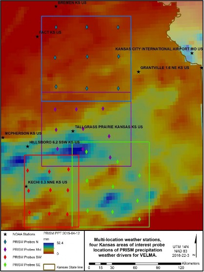
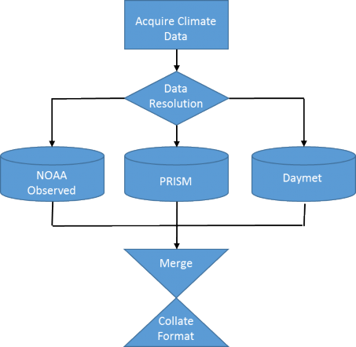
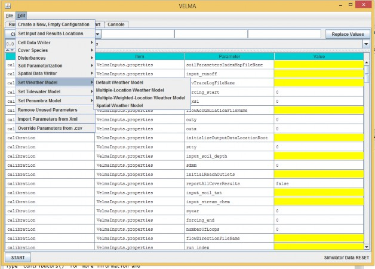
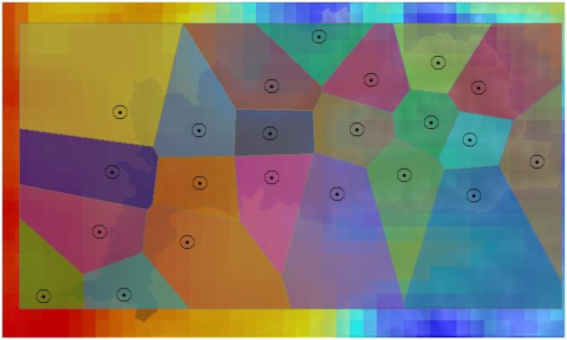
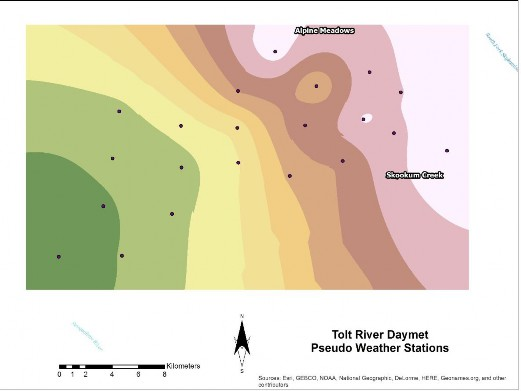
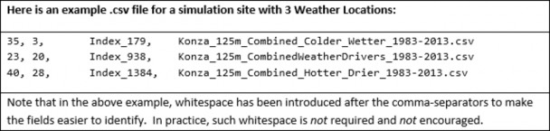

D.7a | Create Multiple-Location Weather Drivers - Alternate Methods Using Pseudo Weather Stations
Overview (Tutorial D.7a - Create Multiple-Location Weather Drivers)
Daily temperature and precipitation data for multiple weather stations can help VELMA to more accurately simulate climatic effects on streamflow and ecosystem dynamics. However, weather stations are often not optimally located or in sufficient density to support accurate model predictions.
This document describes how to add and locate pseudo-climate stations to a VELMA simulation, based upon daily climate data grids produced by sophisticated national climate models such as PRISM and Daymet. The added pseudo-stations can greatly improve VELMA's interpolation of climate drivers across the landscape, thereby improving model performance.
The Multiple-Location Weather Model Configuration requires multiple observed weather stations data within the area of interest (AOI), and these data are not always available for the AOI. Alternatively, "station" driver data can be provided to VELMA from other forms of spatially derived daily precipitation and air temperature values for cells in a simulation's delineated AOI. Unlike actual observed weather station data, these pseudo-station climate data are developed from sophisticated spatial climate models' datasets such as PRISM (PRISM, 2013) or Daily Gridded Weather Data (Daymet). Both data sets are publicly available daily national climate data, gridded at 1 km x 1 km spatial resolution for Daymet, compared to the 4 km x 4 km resolution data from PRISM. Daily gridded data can be extracted as input climate driver data for a VELMA simulation, by probing latitude and longitude positions for single or multiple locations within an AOI. (Figure 1.)
Figure 12 Pseudo weather station example, Flint hills Kansas.
Example Procedure -PRISM, Daymet, or, Observed?
Multiple weather station driver data allows VELMA to more dynamically apply spatially explicit climate drivers to a simulation. For a series of AOI's in the Kansas's Flint hills, there are publicly available NOAA observed weather station data that reside across the study region (Figure1). Only two of the simulated AOI's has a single observation station that resides with its study area, while many observation stations are nearby but are outside these study areas. In this example, many of these NOAA stations had missing data for either precipitation or air temperature, as well as being located out of the AOI's. Pseudo stations or probes of modeled climate data can, in some effect, cover the spatial dynamic of the daily climate by nearest neighbor assignment to probe station. In these study areas, nine stations were created for each AOI to fit Multi-station data from a combination of PRISM and Daymet daily modeled precipitation and air temperature data (Appendix).
In the Kansas example, the simulation was ran for the years 1998 - 2015. Higher resolution Daymet data was available for the years 1998 - 2014. While PRISM data was available for the year 2015. No
continuous data were observed by NOAA in the AOI's. Daymet data was then supplemented with PRISM
data for the missing years, and formatted as required by the "Multiple-Location Weather Configuration"
(Figure 2) (Appendix).
Figure 13 Process flow for multi-station climate data.
Within VELMA there are two choices for the Multi-Location models, "Multiple-Location Weather Model" and "Multiple-Weighted-Locations Weather Model" (Figure 3).
Figure 14 Multi-Location Weather Model options with in VELMA simulator.
Multiple-Location Weather Model
The "Multiple-Location Weather Model" creates Thiessen Polygons around each of the probe stations Figure 4). This is a very common method used in hydrometeorology for creating a weighted mean from multiple measurement spots in a watershed area.
Figure 15 Thiessen Polygons around pseudo station probes.
Multiple-Weighted-Locations Weather Model
The second method "Multiple-Weighted-Locations Weather Model" is a nonlinear interpolation or inverse distance weighting technique. The weight a sample point assigns to the averaging calculation value to a cell is based on its distance or closeness it is to the cell. This weighting creates a moving surface, based on inverse distance squared relationship instead of simple inverse (Figure 5).
Figure 16 Inverse distance weighted influence of pseudo weather station.
You Must Provide the Weather Model with Location and Driver Data for One or More Weather Locations
The Multiple-Location Weather Model needs the location and driver data file name for each "Weather Location" it will use. A "Weather location" is simply the x and y coordinates of a cell within the bounds of the DEM grid specified for the simulation configuration, plus a file of daily driver values that specifies the precipitation and air temperature at that cell.
The value for the weatherLocationDataFileName parameter must be the name (or fully-qualified path + name) of a comma-separated (.csv) file with one or more rows. Each row specifies the location and driver data for a specific cell and has the following field layout:
x-coordinate, y-coordinate, uniqueName, driverFileName
The x-coordinate and y-coordinate must specify a location within the bounds of the simulation
configuration's DEM grid. (I.e. they must be in the ranges [0, (ncol - 1)] and [0, (nrow - 1)] respectively.
(Recall that ncol and nrow are the DEM grid's number-of-columns and number-of-rows values - and they must be set to match the ncols and nrows values of the DEM grid's input_dem (.asc) file.)
As with the weatherLocationDataFileName, the driverFileName may be either a fully-qualified path + name, or simply a file name. In both cases, when presented with a file name without a path, the VELMA simulation engine's initialization code will assume the file is located in the directory specified by the inputDataLocationRootName/inputDataLocationDirName path.
Note: Currently, the weatherLocationDataFileName file cannot contain a header row.
You Must Provide a Driver Data .csv File Corresponding to Each driverFileName Listed in the Weather Locations Data File.
Each driverFileName specifies a comma-separated (.csv) with one row of data per simulation day. Currently, the number of rows must exactly match the number of days implied by the simulation configuration's forcing_start and forcing_end parameters. (E.g. if forcing_start = 1999 and forcing_end
= 2000, then there must be 365 + 366 = 731 rows of driver data in each specified driverFileName file.) Each row of a driverFileName file as the following field layout:
Year, Julian Day, Day's Precipitation (mm), Average Day's Air Temperature (degrees C)
| Here is an example of a few rows from a driver file (these rows are not the first rows in the file): | |||
|---|---|---|---|
| 1983, | 28, | 0, | 3.23 |
| 1983, | 29, | 9.6, | 1.94 |
| 1983, | 30, | 3.3, | -0.95 |
| 1983, | 31, | 12.5, | -4.6 |
| 1983, | 32, | 12.5, | -4.6 |
| 1983, | 33, | 0, | -5.53 |
| 1983, | 34, | 0, | -9.51 |
| 1983, | 35, | 0.5, | -9.36 |
| Again, whitespace has been added above to make the data easier to read. Do not include such whitespace in actual data files. |
Note: Currently, driverFileName files cannot contain header rows.
Appendix: GIS Methods
Making probe points and setting up VELMA's multiple station weather model
- In ArcGIS
- Make point features in watershed
- Add lat & long columns in attribute table
- Calculate X and Y locations for the respective columns in degrees (projection?)
- Add UTM_lat and UTM_long columns (float),
- Calculate X and Y using NAD1983 UTM and units of meters
- Add x-cell, y-cell columns (integer)
- Look up top limit of AOI and left limit
- Using field calculator:
- x-cell = (UTM_long-AOI_left)/(cell size)
- y-cell = (AOI_top-UTM_lat)/(cell size)
- Export attribute table as .txt, then change to .csv
- Using R Scripts
- Enter lat-lon values into 'daymetR' R script to download data from Daymet for each station
- May need to change some parts of script like directories/filenames
- SNOTEL locations will need to be updated when exact locations are found
- Bob can identify from satellite imagery
- Use 'fix_daymet' R script to account for Daymet lack of leap year (averages first and last day of year)
- Some things in script like file names, directories, and years need to be altered
- Creating VELMA set up files for Multiple-location Weather Configurations (this tutorial)
- Need to make .csv set up file in Excel for VELMA for multiple weather stations with x, y, cell_index , weather station file name
- 'fix_daymet' R script gives an output of created file names, can be copied into this
- for cell_index column can use any unique identifier, we just used 'x_XXXX_y_YYYY' with XXXX and YYYY being the x and y cords
- VELMA set up
- Edit -> Set Weather Model -> Multiple-Location Weather Model 'weatherLocationsdatafilename' variable is the configuration file made above
Appendix (Example R code):
DaymetR_KS.r
# Author: Paul Pettus
# Purpose: Download Daymet climate data via lat long probe method
install.packages("rgeos") install.packages("DaymetR") library("DaymetR")
setwd("d:/temp/netCDF/")
# Download a probe site by latitude and longitude
download.daymet(site="Northern_KS_1998-2014_X_478_Y_427",lat=39.3031,lon=-96.3158,start_yr=1998,end_yr=2014,internal=FALSE) download.daymet(site="Northern_KS_1998-2014_X_474_Y_759",lat=38.9298,lon=-96.3348,start_yr=1998,end_yr=2014,internal=FALSE) download.daymet(site="Northern_KS_1998-2014_X_474_Y_119",lat=39.65,lon=-96.3074,start_yr=1998,end_yr=2014,internal=FALSE) download.daymet(site="Northern_KS_1998-2014_X_153_Y_121",lat=39.658,lon=-96.7758,start_yr=1998,end_yr=2014,internal=FALSE) download.daymet(site="Northern_KS_1998-2014_X_142_Y_437",lat=39.3019,lon=-96.8018,start_yr=1998,end_yr=2014,internal=FALSE) download.daymet(site="Northern_KS_1998-2014_X_153_Y_741",lat=38.9604,lon=-96.7978,start_yr=1998,end_yr=2014,internal=FALSE) download.daymet(site="Northern_KS_1998-2014_X_800_Y_121",lat=39.6361,lon=-95.8344,start_yr=1998,end_yr=2014,internal=FALSE) download.daymet(site="Northern_KS_1998-2014_X_806_Y_426",lat=39.2931,lon=-95.8401,start_yr=1998,end_yr=2014,internal=FALSE) download.daymet(site="Northern_KS_1998-2014_X_803_Y_759",lat=35.8617,lon=-95.8617,start_yr=1998,end_yr=2014,internal=FALSE)
download.daymet(site="Southern_KS_1998-2014_X_258_Y_621",lat=37.4711,lon=-96.9415,start_yr=1998,end_yr=2014,internal=FALSE) download.daymet(site="Southern_KS_1998-2014_X_51_Y_607",lat=37.4914,lon=-97.2331,start_yr=1998,end_yr=2014,internal=FALSE) download.daymet(site="Southern_KS_1998-2014_X_447_Y_626",lat=37.4599,lon=-96.6753,start_yr=1998,end_yr=2014,internal=FALSE) download.daymet(site="Southern_KS_1998-2014_X_32_Y_170",lat=37.9838,lon=-97.249,start_yr=1998,end_yr=2014,internal=FALSE) download.daymet(site="Southern_KS_1998-2014_X_42_Y_381",lat=37.7462,lon=-97.2408,start_yr=1998,end_yr=2014,internal=FALSE) download.daymet(site="Southern_KS_1998-2014_X_271_Y_374",lat=37.7487,lon=-96.9161,start_yr=1998,end_yr=2014,internal=FALSE) download.daymet(site="Southern_KS_1998-2014_X_452_Y_375",lat=37.7423,lon=-96.6586,start_yr=1998,end_yr=2014,internal=FALSE) download.daymet(site="Southern_KS_1998-2014_X_459_Y_157",lat=37.9872,lon=-96.6409,start_yr=1998,end_yr=2014,internal=FALSE) download.daymet(site="Southern_KS_1998-2014_X_259_Y_181",lat=37.966,lon=-96.9258,start_yr=1998,end_yr=2014,internal=FALSE)
download.daymet(site="Middle_North_KS_1998-2014_X_172_Y_594",lat=38.2307,lon=-96.7979,start_yr=1998,end_yr=2014,internal=FALSE) download.daymet(site="Middle_North_KS_1998-2014_X_157_Y_396",lat=38.4546,lon=-96.812,start_yr=1998,end_yr=2014,internal=FALSE) download.daymet(site="Middle_North_KS_1998-2014_X_148_Y_185",lat=38.6926,lon=-96.8179,start_yr=1998,end_yr=2014,internal=FALSE) download.daymet(site="Middle_North_KS_1998-2014_X_368_Y_183",lat=38.6883,lon=-96.5013,start_yr=1998,end_yr=2014,internal=FALSE) download.daymet(site="Middle_North_KS_1998-2014_X_722_Y_684",lat=38.113,lon=-96.0174,start_yr=1998,end_yr=2014,internal=FALSE) download.daymet(site="Middle_North_KS_1998-2014_X_436_Y_598",lat=38.2189,lon=-96.4213,start_yr=1998,end_yr=2014,internal=FALSE) download.daymet(site="Middle_North_KS_1998-2014_X_439_Y_385",lat=38.4586,lon=-96.4075,start_yr=1998,end_yr=2014,internal=FALSE) download.daymet(site="Middle_North_KS_1998-2014_X_647_Y_176",lat=38.6873,lon=-96.101,start_yr=1998,end_yr=2014,internal=FALSE) download.daymet(site="Middle_North_KS_1998-2014_X_711_Y_463",lat=38.3613,lon=-96.0229,start_yr=1998,end_yr=2014,internal=FALSE)
download.daymet(site="Southeastern_KS_1998-2014_X_154_Y_414",lat=37.848,lon=-96.3725,start_yr=1998,end_yr=2014,internal=FALSE) download.daymet(site="Southeastern_KS_1998-2014_X_161_Y_727",lat=37.4954,lon=-96.3756,start_yr=1998,end_yr=2014,internal=FALSE) download.daymet(site="Southeastern_KS_1998-2014_X_149_Y_112",lat=38.1875,lon=-96.3673,start_yr=1998,end_yr=2014,internal=FALSE) download.daymet(site="Southeastern_KS_1998-2014_X_422_Y_738",lat=37.4738,lon=-96.0081,start_yr=1998,end_yr=2014,internal=FALSE) download.daymet(site="Southeastern_KS_1998-2014_X_703_Y_360",lat=37.8888,lon=-95.5907,start_yr=1998,end_yr=2014,internal=FALSE) download.daymet(site="Southeastern_KS_1998-2014_X_426_Y_476",lat=37.7686,lon=-95.9892,start_yr=1998,end_yr=2014,internal=FALSE) download.daymet(site="Southeastern_KS_1998-2014_X_474_Y_216",lat=38.0601,lon=-95.9096,start_yr=1998,end_yr=2014,internal=FALSE) download.daymet(site="Southeastern_KS_1998-2014_X_703_Y_815",lat=37.3764,lon=-95.6141,start_yr=1998,end_yr=2014,internal=FALSE) download.daymet(site="Southeastern_KS_1998-2014_X_682_Y_622",lat=37.5948,lon=-95.6343,start_yr=1998,end_yr=2014,internal=FALSE)
fix_Daymet_LeapYear_PPT_TMEAN.r
# Author: Paul Pettus
# Purpose: Format Daymet data, fix leap years, create air temp mean.
# Daymet data does not create daily files for leap day on leap years, it drops Dec 31 # data on leap years. VELMA requires leap days, solution is to average both mean
# air temp and precipitation of julian day 365 and 1 -> julian day 366 # For data sets ending in a leap year, such as 2016, julian day 365 data # is repeated for julian day 366.
#install.packages("miscTools") library("miscTools") library(plyr)
###########################################################################################
# Modify setwd (working directory)
# Modify outDir (output file directory) setwd("C:/Temp/VELMA_Mobile_Bay/Climate/") outDir<-"C:/Temp/VELMA_Mobile_Bay/Climate/Output/"
# Modify station output processed list file name (.csv)
stationsFile<-"C:/Temp/VELMA_Mobile_Bay/Climate/Output/Mobile_Stations.csv" ###########################################################################################
# Expected input is "download_daymet" from "daymetr" package # or "download.daymet" from "DaymetR" package
inFiles <- list.files(pattern="*.csv") nFiles <- length(inFiles)
# For multiple probe station files
# For each leap year in the study range input a mean value for julian day 366 for (name in inFiles)
{
Page | 220
print(name) # test file
# myfile<-"C:/Temp/VELMA_Mobile_Bay/Climate/Daphne_0.4_SW_AL_US_2012-2016_X_989_Y_-7027_2012_2016.csv" # will overwrite test file with listed file
myfile<-name
# read in raw daymet file
df = read.csv(myfile,skip=8,header=FALSE,sep=",",col.names=c("year","yday","tday",
"ppt","srad","swe",
"tmax","tmin","vp"))
# remove unnecessary Daymet climate columns # keep ppt, tmax, tmin
parseFile<-df[-c(3,5,6,9)] head(parseFile)
# add tmean column parseFile["tmean"]<- NA
# create a mean air temp from max and min daily temp parseFile$tmean <- (parseFile$tmax+parseFile$tmin)/2
# remove tmax, tmin columns modDaymet <- parseFile[-c(4,5)] head(modDaymet)
# return a vector of all unique years in the Daymet file listYears=unique(modDaymet$year)
# A function to determin if a year is a leap year # http://en.wikipedia.org/wiki/Leap_year
# A leap year is every 4 years, but not every 100 years, yet then again every 400 years is.leapyear=function(year){
return(((year %% 4 == 0) & (year %% 100 != 0)) | (year %% 400 == 0))
}
# empty vector for leap years leapYears <- c()
# Loop through all the years looking for the leap years and add them to a list of leap years for (yearNumber in listYears) {
# Using the is.leapyear function return and add a leap year to the yeap year list if (is.leapyear(yearNumber) == TRUE) {
leapYears <- c(leapYears,yearNumber)
}
}
# Create a new data.frame that matches the raw Dayment frame input
# this will be filled with the output data.frame and leap day additions
newFrame <- data.frame(year= integer(0), yday=integer(0), ppt=numeric(0), tmean=numeric(0))
# track position of rows processed, start at the end of first year rowsProcessed <- 0
# Loop through all the years to process for (yearNumber in listYears) {
print (yearNumber)
# check to see if year is a leap year and leap year is not the last year to process if (is.element(yearNumber, leapYears) && yearNumber < listYears[length(listYears)] ){
# Get values of 1 to 365 Julian day of the year yearSubset<-subset(modDaymet, year == yearNumber) # bind subset of year to newFrame
newFrame<-rbind(newFrame,yearSubset)
# increment rows processed position pointer to the end of year (365) on the original raw Daymet frame rowsProcessed<-rowsProcessed + 365
# Get values of Julian day 365 value_J_365<-modDaymet[rowsProcessed,] # Get values of next years Julian day 1 value_J_1<-modDaymet[rowsProcessed+1,] # Average the first and last day value_J_366<-(value_J_365+value_J_1)/2 # copy the year number value_J_366[1]=yearNumber
# create a new 366 Julian day value_J_366[2]=366
# File new data frame with new Julian 366 data newFrame<-rbind(newFrame,value_J_366)
}
# check if the year is the last year in the listYears and that it is also # a leap year
else if (yearNumber == listYears[length(listYears)] && yearNumber == leapYears[length(leapYears)] ){ # Get values of 1 to 365 Julian day of the year
yearSubset<-subset(modDaymet, year == yearNumber) # bind subset of year to newFrame
newFrame<-rbind(newFrame,yearSubset)
# increment rows processed position pointer to the end of year (365) on the original raw Daymet frame rowsProcessed<-rowsProcessed + 365
# copy the last day of the year to Julian 365 value_J_365<-modDaymet[rowsProcessed,]
# copy the last day of the year to Julian 366 value_J_366<-value_J_365
# copy the year number value_J_366[1]=yearNumber
# create a new 366 Julian day value_J_366[2]=366
# File new data frame with new Julian 366 data newFrame<-rbind(newFrame,value_J_366)
}
# All other years are not leap years, so just add their data to the new frame else{
# Get values of 1 to 365 Julian day of the year yearSubset<-subset(modDaymet, year == yearNumber) # bind subset of year to newFrame
newFrame<-rbind(newFrame,yearSubset)
# increment rows processed position pointer to the end of year (365) on the original raw Daymet frame rowsProcessed<-rowsProcessed + 365
}
}
print("Processed Psuedo Station File") print(name)
# Define output file name
outFile<-paste(outDir,name,sep="")
# convert data.frame to data.matrix for easier file writing matClimate<-data.matrix(newFrame)
# Create the output file of processed weather data write.table(matClimate,outFile,row.names=FALSE,col.names=FALSE,sep=",")
}
# Write out a list of stations processed write.table(inFiles,stationsFile,row.names=FALSE,col.names=FALSE,sep=",") print("We did it, time for a coffee break!")
Daymet_prism_blender_2-25-2016.r
# Author: Paul Pettus # Date: 2-29-2016
# Purpose:
# Blend Daymet and PRISM probe weather station data into VELMA ready driver input #
install.packages("prism") install.packages("zoo")
#updateR() library("prism") library("zoo")
# set working dir setwd("c:/Temp/PRISM/") mydir<-"c:/Temp/PRISM/"
# check path for prism package path_check()
# Download study dates for precipitation and mean air temperature, PRISM get_prism_dailys(type="tmean", minDate = "2015-01-01", maxDate = "2016-2-22", keepZip=FALSE) get_prism_dailys(type="ppt", minDate = "2015-01-01", maxDate = "2016-2-22", keepZip=FALSE)
# Set input dir of probe data, this data was created from Daymet probes baseInDir<-"C:/temp/Output/"
# Set output dir for final files baseOutDir<-"C:/temp/New_Output/"
# CSV file containing the station file names and lat and long of stations stationCSV<-"C:/temp/kansas_stations.csv"
headNames<-c("filename","lat","long")
stations <- read.csv(stationCSV,header=FALSE,sep=",",col.names=headNames) # Determine the number of stations
nFiles <- nrow(stations)
for (i in 1:nFiles)
{
# Get latitude, longitude, and filename lat<-stations$lat[i]
long<-stations$long[i] filename<-stations$filename[i] location<-c(long,lat)
# Define the Daymet input file name
fullPathFile<-paste(baseInDir,filename,"_1998_2014",".csv",sep='') headNames<-c("year","yday","ppt","tmean")
# Read in Daymet probe station file
wData<-read.csv(fullPathFile,header=FALSE,sep=",",col.names=headNames) # Slice prism cell data by location of cell
curStation <- prism_slice(location,ls_prism_data()[,1])
# Retrive precip and mean air temp
rain<-curStation$data[grep("ppt",rownames(curStation$data)),] temp<-curStation$data[grep("tmean",rownames(curStation$data)),] rownames(rain)<-c() #remove rownames
rownames(temp)<-c() #remove rownames
addLength<-nrow(rain)
# create a new data frame for the output data
outFrame <- data.frame(year=integer(addLength),yday=integer(addLength),ppt=double(addLength),tmean=double(addLength))
# modify the date field to julian day and year outFrame$yday<-as.numeric(format(rain$date, "%j")) outFrame$year<-as.numeric(format(rain$date, "%Y")) outFrame$ppt<-rain$data
outFrame$tmean<-temp$data
# combined Daymet frame with PRISM frame climate data finalFrame<-rbind(wData,outFrame)
# Fixing file name of input files newFN<-gsub("2014","2015",filename) # Define the output file name
outPathFile<-paste(baseOutDir,newFN,".csv",sep='')
# write output file to final output dir. matClimate<-data.matrix(finalFrame)
write.table(matClimate,outPathFile,row.names=FALSE,col.names=FALSE,sep=",") }